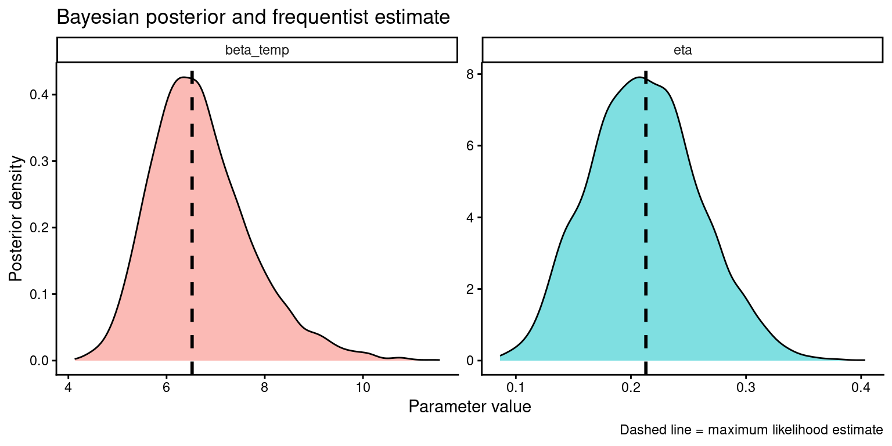

Activity 1 — Fitting a Q-learning model by maximum likelihood
Goal: Load the example participant dataset, write down the Q-learning model, fit it with optim(), inspect approximate uncertainty, then simulate from the fitted model and use parametric bootstrap to get another estimate of parameter variability.
Task
Participants completed a 2-armed bandit task1. In this task participants have to make, in each trial, a choice between two symbols. Each symbol is attached to a high (0.7) or low (0.3) probability of giving a reward, however participants do not know which symbol has a high probability, and have to figure it out by trial and errors, so as to maximise their overall rewards. The video illustrates a few trials of this task:
Participant choices are stored in several ways: tar_choice indicate whether participants chose the symbol on the right (1) or left (2); and prob_1 and prob_2 are the reward probabilities. P is the reward probability of the chosen symbol, and win is a binary indicator of whether a reward (coin) was obtained.
In the modelling code below choices are recoded as follow:
C = 1: the participant chose the option with the higher reward probability on that trial (in trials where P > 0.5).
C = 0: the participant chose the option with the lower reward probability on that trial (P < 0.5).
Q-learning model formulation
The model assumes that on every trial \(t\) the participant makes a choice action \(a \in \left\{1,2 \right\}\) and obtains a “reward” \(r \in \left\{0,1 \right\}\).
To guide choices, the participant maintains and updates their estimate of the value (that is the expected, long-run, reward) of each choice option — the so-called \(Q\)-values. These \(Q\)-values are updated after each choice according to
\[
Q_{t+1}(a_t) = Q_t(a_t) + \eta \, \delta_t
\]
where \(\delta_t\) is the reward prediction error:
\[
\delta_t = r_t - Q_t(a_t).
\]
In this script, the choice probability for the high-reward option is written as a logistic (also called softmax) function of the value difference:
Thus the model has 2 free parameters to be estimated:
the learning rate\(\eta\), which controls the extent to which values are influenced by new reward observations
the inverse temperature\(\beta_{\mathrm{temp}}\), which control the variability of choices. When \(\beta_{\mathrm{temp}}=0\), the choices are completely at random; and when \(\beta_{\mathrm{temp}} \rightarrow \infty\) the softmax function becomes effectively a deterministic “hard” max function (corresponding to always choosing the options with highest Q-value).
At the start of each block in the task new symbols are presented and the values are reset to
\[
Q_1(1) = Q_1(2) = 0.5.
\]
The equations above allow calculating probability of participant choice in a trial given a set of parameters and the history of choices and rewards observed up until that trial. Specifically, if \(P(C_t = 1\mid Q_t)\) is the probability of the participant choosing the high-reward-rate symbol at trial \(t\), the probability of choosing the low-reward-rate symbol is then \(P(C_t =0\mid Q_t) = 1 - P(C_t = 1\mid Q_t)\).
In order to estimate the model from the data we need to write down a function that compute the joint probability of all trials \(t\) and blocks \(j\). It is easier to work with the logarithm of the probability, usually referred to as the log-likelihood function. In this case this can be written as:
(Note: the code presented below minimizes the negative log-likelihood instead of maximizing the log-likelihood.)
Model fitting with maximum likelihood estimation (MLE)
In order to fit the model to participants data we need 2 ingredients: a function that gives the probability of the data under the model (and a given set of parameter values); and a numerical optimizer algorithm that can find the maximum of the function (here we will use the ones build in with the R function optim()).
It is easier and numerically more stable to work with the logarithm of the probability of the data — the so-called log-likelihood function. Additionally
1) Negative log-likelihood
Code
# Example code# Negative log-likelihood for a simple Q-learning model# pars[1] = eta (learning rate, constrained to 0-1)# pars[2] = beta_temp (inverse temperature, constrained to >0)nll_qlearning <-function(pars, dat) { eta <- pars[1] beta_temp <- pars[2]# simple parameter boundsif (eta <0|| eta >1|| beta_temp <=0) {return(1e10) }# make a block id like in your Stan prep dat$block_id <-paste(dat$session, dat$block_n, sep ="_") block_ids <-unique(dat$block_id)# initial Q values initQ <-c(0.5, 0.5) loglik <-0# loop over blocksfor (j in1:length(block_ids)) { this_block <- block_ids[j] d_j <- dat[dat$block_id == this_block, ]# choice coded as:# 1 = chose option with higher reward probability# 0 = chose option with lower reward probability C <-ifelse(d_j$P >0.5, 1, 0) R <- d_j$win Q <- initQ# loop over trialsfor (t in1:nrow(d_j)) { VD <- Q[2] - Q[1]# p(choose high-reward option) p_choice1 <-1/ (1+exp(-beta_temp * VD))# add log-probability of observed choiceif (C[t] ==1) { loglik <- loglik +log(p_choice1) } else { loglik <- loglik +log(1- p_choice1) }# prediction error for chosen option PE <- R[t] - Q[C[t] +1]# value update Q[C[t] +1] <- Q[C[t] +1] + eta * PE } }return(-loglik)}
2) Fit the model
Code
fit <-optim(par =c(0.2, 2), # starting values: eta, beta_tempfn = nll_qlearning,dat = d_s1,method ="L-BFGS-B",lower =c(0, 0.0001),upper =c(1, 30),hessian=TRUE)fit
The field $par report the MLE estimates of our two parameters
eta (\(\eta\)) controls how strongly new outcomes update the chosen value.
beta_temp (\(\beta_{\mathrm{temp}}\)) controls how consistently choices track the current value difference.
Computing standard errors of model parameters via Laplace approximation
Note that we also asked optim() to return the Hessian matrix (by setting hessian = TRUE). The Hessian is a square matrix of second-order partial derivatives of the log-likelihood function with respect to the parameters, evaluated at the maximum. Intuitively, it measures the curvature — or “peakedness” — of the log-likelihood surface around that maximum. A high curvature means the log-likelihood falls steeply as we move away from the peak, which gives us confidence that we have precise estimates of the parameters (i.e. estimates likely to be close to their unknown true values). Conversely, a flatter log-likelihood indicates that a broad range of parameter values yield similar log-likelihood scores; we are therefore more uncertain about how close our estimates are to the true values.
We can use the Hessian to compute standard errors for the parameters via what is known as the Laplace approximation. More specifically, the Hessian returned by optim() is the Hessian of the negative log-likelihood, which is referred to as the observed Fisher Information matrix. Inverting this matrix yields an estimate of the covariance matrix of the parameters, and taking the square roots of its diagonal entries gives the standard deviations of the sampling distributions of the parameters — that is, their standard errors. In R:
Code
# SE approximatedsqrt(diag(solve(fit$hessian)))
[1] 0.04657085 0.90442770
3) Simulate data from the fitted Q-learning model
Another useful thing we can do with our model, is using it to simulate data. This can be valuable for several tasks: estimating robust estimates of uncertainty via bootstrapping, verifying that our implementation is correct and that we can recover the model parameters from simulated data exactly; or run simulation study to make decisions about study design (e.g. how many trials, participants etc.).
By simulating and refitting the model many times, we can create a distribution of boostrapped parameter values, and use that to assess the uncertainty around our parameter estimates.
Code
############# paramtric bootstrapping# number of bootstrap samplesB <-200# matrix to store parameter estimatesboot_par <-matrix(NA, nrow = B, ncol =2)colnames(boot_par) <-c("eta", "beta_temp")# fitted parameters from original dataeta_hat <- fit$par[1]beta_hat <- fit$par[2]for (b in1:B) {# simulate one new dataset from fitted model d_sim <-simulate_qlearning(dat = d_s1,eta = eta_hat,beta_temp = beta_hat )# refit model to simulated data fit_b <-optim(par =c(eta_hat, beta_hat),fn = nll_qlearning,dat = d_sim,method ="L-BFGS-B",lower =c(0, 0.0001),upper =c(1, 20) )# store estimates boot_par[b, ] <- fit_b$par}# standard errorsapply(boot_par, 2, sd)
eta beta_temp
0.05305552 1.43405590
Further task
Compare the Hessian-based standard errors with the bootstrap-based ones. Do they tell a similar story about which parameter is estimated more precisely?
Activity 2 — Fitting a win-stay-lose-shift model
Goal: Write and fit an alternative model in which behaviour depends only on the previous trial outcome, then examine how well the free parameter can be recovered from simulated datasets.
Win-stay-lose-shift model formulation
This model has a single parameter, lambda, which controls random responding.
If lambda = 0, behaviour is deterministic: after a win the agent stays, after a loss it shifts.
If lambda = 1, behaviour is random, so stay and shift are both chosen with probability 0.5.
Let C_t denote whether the high-reward option was chosen on trial t, and define a stay response as C_t = C_{t-1}. Then for trials after the first:
Having implemented a function to simulate the data from a model, it is straightforward to use it to verify how well the parameters of the model can be recovered from a dataset. This can be useful for example when we are planning a study, and can provide a principled way to determine how many trials we want each participant to complete.
Code
######################### parameter recoverylibrary(ggplot2)# grid of true parameter valueslambda_grid <-seq(0.05, 0.95, length.out =10)# number of repetitions for each true valuen_rep <-10# empty object to store resultsrecov <-data.frame(lambda_true =numeric(),lambda_fit =numeric())for (i in1:length(lambda_grid)) { lambda_true <- lambda_grid[i]for (r in1:n_rep) {# simulate dataset d_sim <-simulate_wsls(dat = d_s1,lambda = lambda_true )# refit model fit_wsls_sim <-optim(par =0.2,fn = nll_wsls,dat = d_sim,method ="L-BFGS-B",lower =1e-15,upper =1 )# store results recov <-rbind( recov,data.frame(lambda_true = lambda_true,lambda_fit = fit_wsls_sim$par ) ) }}# summarise across repetitionsrecov_sum <-aggregate( lambda_fit ~ lambda_true,data = recov,FUN =function(x) c(mean =mean(x), sd =sd(x)))recov_sum <-data.frame(lambda_true = recov_sum$lambda_true,lambda_mean = recov_sum$lambda_fit[, "mean"],lambda_sd = recov_sum$lambda_fit[, "sd"])recov_sum
Use the recovery plot to judge where the model is estimated well and where it becomes biased or noisy. What features of the task might make lambda easier or harder to identify?
Activity 3 — Visualising fit and comparing the models
Goal: Compute trial-by-trial predicted choice probabilities for both models, compare them against observed behaviour, then compare models using information criteria and leave-one-block-out cross-validation.
1) Predicted probabilities and summary functions
TO compute the predicted probabilities of participant choices, the approach is very similar to computing the log-likelihood (except that we do not transform log-transform probabilities, and sum across trials). Additionally, rather than computing the probability of the observed choices, we compute for each trial the probability of participants choosing the high-reward symbol.
While in this case is quite clear from the plots which model provide a better fit, it is not always the case that we can visualise and compare the relative quality of model fit so clearly, and it can be useful to compare according to information criteria like the AIC (Akaike Information Criterion) or the BIC (Bayesian Information Criterion). Both of these criteria are based on the maximum of the log-likelihood function, and penalise it based on the complexity of the model (e.g. the number of free parameters), in order to minimise the risk of overfitting.
Code
################################## model comparison# 1: information criteria# number of observationsn_obs <-nrow(d_s1)# number of free parametersk_qlearning <-2k_wsls <-1# maximized log-likelihoodsloglik_qlearning <--fit$valueloglik_wsls <--fit_wsls$value# AICAIC_qlearning <-2* k_qlearning -2* loglik_qlearningAIC_wsls <-2* k_wsls -2* loglik_wsls# BICBIC_qlearning <-log(n_obs) * k_qlearning -2* loglik_qlearningBIC_wsls <-log(n_obs) * k_wsls -2* loglik_wsls# display resultscomparison_data <-data.frame(model =c("Q-learning", "WSLS"),k =c(k_qlearning, k_wsls),logLik =c(loglik_qlearning, loglik_wsls),AIC =c(AIC_qlearning, AIC_wsls),BIC =c(BIC_qlearning, BIC_wsls))
5) Compare models with leave-one-block-out cross-validation
Cross-validation can be used to compare models as well. Both information criteria and cross-validation are ways to assess the quality of model fit to the data whilst controlling the risk of over-fitting. While AIC ad BIC are quick approximations, cross-validation uses iterative splitting of datra into train and test set to evaluate how well the model can predict data out of its training sample.
model k logLik AIC BIC CVAL
1 Q-learning 2 -198.2548 400.5097 408.8572 -205.0632
2 WSLS 1 -297.8478 597.6955 601.8693 -300.0125
Further task
Do the conclusions from AIC, BIC, and cross-validation agree? If not, which criterion would you trust most for this teaching example, and why?
Activity 4 — Bonus: Q-learning in a Bayesian framework with Stan
Goal: Prepare block-structured data for Stan, fit the supplied Q-learning model, and compare the posterior distributions with the frequentist estimates obtained earlier.
The Bayesian version uses the supplied Stan program Qlearning_M1.stan. The code below is kept exactly as in the script.
1) Prepare data for Stan
Code
########################## BOnus: Q-learning model in a Bayesian frameworkprep_stan_data <-function(dat){ dat$block_id <-paste(dat$session,dat$block_n,sep="_") J <-length(unique(dat$block_id)) N <-tapply(dat$block_id,dat$block_id, length)if(any(N)<10){ xbid <-names(N)[which(N<10)] dat <- dat %>%filter(!is.element(block_id, xbid)) J <-length(unique(dat$block_id)) N <-tapply(dat$block_id,dat$block_id, length) } maxN <-max(N) dat$C <-ifelse(dat$P>0.5,1,0) C <-array(dim=c(J,maxN)) R <-array(dim=c(J,maxN))for(j in1:J){ c_j <-unique(dat$block_id)[j] C[j,1:N[j]] <- dat$C[dat$block_id==c_j] R[j,1:N[j]] <- dat$win[dat$block_id==c_j] }# check NA C[is.na(C)] <--99 R[is.na(R)] <--99 d_stan <-list(J=J, N=N, maxN=maxN, C=C, R=R)str(d_stan)return(d_stan)}d_stan <-prep_stan_data(d_s1)
List of 5
$ J : int 24
$ N : int [1:24(1d)] 20 20 20 20 20 20 20 20 20 20 ...
..- attr(*, "dimnames")=List of 1
.. ..$ : chr [1:24] "1_1" "1_2" "1_3" "1_4" ...
$ maxN: int 20
$ C : num [1:24, 1:20] 0 0 0 1 0 0 0 0 0 1 ...
$ R : num [1:24, 1:20] 0 0 0 1 1 1 0 0 1 1 ...
2) Sample from the posterior
The following chunk may take a while to run because it compiles and samples the Stan model.
Code
library(rstan)options(mc.cores = parallel::detectCores()) # indicate stan to use multiple cores if available# run sampling: 4 chains in parallel on separate coresstan_fit <-stan(file ="Qlearning_M1.stan", data = d_stan, iter =2000, chains =4)
Code
print(stan_fit, probs =c(0.025, 0.5, 0.975),)
Inference for Stan model: anon_model.
4 chains, each with iter=2000; warmup=1000; thin=1;
post-warmup draws per chain=1000, total post-warmup draws=4000.
mean se_mean sd 2.5% 50% 97.5% n_eff Rhat
eta 0.21 0.00 0.05 0.13 0.21 0.31 1341 1
beta_temp 6.70 0.03 1.02 5.06 6.58 9.14 1193 1
lp__ -195.07 0.03 1.06 -197.84 -194.74 -194.00 1340 1
Samples were drawn using NUTS(diag_e) at Tue Mar 17 07:13:16 2026.
For each parameter, n_eff is a crude measure of effective sample size,
and Rhat is the potential scale reduction factor on split chains (at
convergence, Rhat=1).
3) Compare posterior draws with the frequentist estimates
Run the next chunks after stan_fit has been created.
Code
library(tidybayes)# extract posterior drawspost_draws <- stan_fit %>%spread_draws(eta, beta_temp) %>%data.frame()# put in long formatpost_long <-rbind(data.frame(parameter ="eta", value = post_draws$eta),data.frame(parameter ="beta_temp", value = post_draws$beta_temp))# frequentist estimatesmle_df <-data.frame(parameter =c("eta", "beta_temp"),mle = fit$par)# plotggplot(post_long, aes(x = value)) +geom_density(aes(fill=parameter), alpha=0.5) +geom_vline(data = mle_df,linewidth=1,aes(xintercept = mle),linetype ="dashed" ) +guides(fill ="none") +facet_wrap(~ parameter, scales ="free") +labs(x ="Parameter value",y ="Posterior density",title ="Bayesian posterior and frequentist estimate",caption ="Dashed line = maximum likelihood estimate" )+theme_classic()

Further task
Compare the Bayesian posterior spread with the uncertainty summaries from the Hessian and the bootstrap.
Footnotes
In the experiment responses were made via eye movements, and we investigated how learning the value of choice options influenced the dynamics of saccadic eye movements (we will not consider eye movement analyses here).↩︎
Source Code
---title: "PGR Training: Computational modelling of a 2-armed bandit task<br> Worksheet"author: "Matteo Lisi"format: html: toc: true code-tools: true code-fold: showexecute: echo: true warning: false message: false eval: true freeze: autoeditor: source---```{r, include=FALSE}library(tidyverse)d_s1 <- read_csv("../data/dAA13.csv")```## Activity 1 — Fitting a Q-learning model by maximum likelihood> Goal: Load the example participant dataset, write down the Q-learning model, fit it with `optim()`, inspect approximate uncertainty, then simulate from the fitted model and use parametric bootstrap to get another estimate of parameter variability.#### TaskParticipants completed a 2-armed bandit task[^task]. In this task participants have to make, in each trial, a choice between two symbols. Each symbol is attached to a high (0.7) or low (0.3) probability of giving a reward, however participants do not know which symbol has a high probability, and have to figure it out by trial and errors, so as to maximise their overall rewards. The video illustrates a few trials of this task:[^task]: In the experiment responses were made via eye movements, and we investigated how learning the value of choice options influenced the dynamics of saccadic eye movements (we will not consider eye movement analyses here).{{< video ../files/demo.mp4 >}}#### SetupLoad the dataset for participant `AA13`.```{r}# library(tidyverse)# load datad_s1 <-read_csv("../data/dAA13.csv")# examine variablesstr(d_s1)```Participant choices are stored in several ways: `tar_choice` indicate whether participants chose the symbol on the right (`1`) or left (`2`); and `prob_1` and `prob_2` are the reward probabilities. `P` is the reward probability of the chosen symbol, and `win` is a binary indicator of whether a reward (coin) was obtained.In the modelling code below choices are recoded as follow:- `C = 1`: the participant chose the option with the higher reward probability on that trial (in trials where `P > 0.5`).- `C = 0`: the participant chose the option with the lower reward probability on that trial (`P < 0.5`).::: callout-tip#### Q-learning model formulationThe model assumes that on every trial $t$ the participant makes a choice action $a \in \left\{1,2 \right\}$ and obtains a "reward" $r \in \left\{0,1 \right\}$. To guide choices, the participant maintains and updates their estimate of the value (that is the expected, long-run, reward) of each choice option --- the so-called $Q$-values. These $Q$-values are updated after each choice according to $$Q_{t+1}(a_t) = Q_t(a_t) + \eta \, \delta_t$$where $\delta_t$ is the _reward prediction error_:$$\delta_t = r_t - Q_t(a_t).$$In this script, the choice probability for the high-reward option is written as a logistic (also called _softmax_) function of the value difference:$$p_t = P(C_t = 1\mid Q_t) = \frac{1}{1 + \exp\left[-\beta_{\mathrm{temp}}\left(Q_t(2)-Q_t(1)\right)\right]}.$$Thus the model has **2 free parameters** to be estimated:- the **learning rate** $\eta$, which controls the extent to which values are influenced by new reward observations- the **inverse temperature** $\beta_{\mathrm{temp}}$, which control the variability of choices. When $\beta_{\mathrm{temp}}=0$, the choices are completely at random; and when $\beta_{\mathrm{temp}} \rightarrow \infty$ the softmax function becomes effectively a deterministic "hard" max function (corresponding to always choosing the options with highest Q-value).At the start of each block in the task new symbols are presented and the values are reset to$$Q_1(1) = Q_1(2) = 0.5.$$The equations above allow calculating probability of participant choice in a trial given a set of parameters and the history of choices and rewards observed up until that trial. Specifically, if $P(C_t = 1\mid Q_t)$ is the probability of the participant choosing the high-reward-rate symbol at trial $t$, the probability of choosing the low-reward-rate symbol is then $P(C_t =0\mid Q_t) = 1 - P(C_t = 1\mid Q_t)$.In order to estimate the model from the data we need to write down a function that compute the joint probability of all trials $t$ and blocks $j$. It is easier to work with the logarithm of the probability, usually referred to as the _log-likelihood function_. In this case this can be written as:$$\log L(\eta,\beta_{\mathrm{temp}}) =\sum_j \sum_t \left[C_{jt}\log p_{jt} + (1-C_{jt})\log(1-p_{jt})\right].$$(Note: the code presented below minimizes the negative log-likelihood instead of maximizing the log-likelihood.):::#### Model fitting with maximum likelihood estimation (MLE)In order to fit the model to participants data we need 2 ingredients: a function that gives the probability of the data under the model (and a given set of parameter values); and a numerical optimizer algorithm that can find the maximum of the function (here we will use the ones build in with the R function `optim()`).It is easier and numerically more stable to work with the logarithm of the probability of the data — the so-called **log-likelihood** function. Additionally##### 1) Negative log-likelihood```{r}# Example code# Negative log-likelihood for a simple Q-learning model# pars[1] = eta (learning rate, constrained to 0-1)# pars[2] = beta_temp (inverse temperature, constrained to >0)nll_qlearning <-function(pars, dat) { eta <- pars[1] beta_temp <- pars[2]# simple parameter boundsif (eta <0|| eta >1|| beta_temp <=0) {return(1e10) }# make a block id like in your Stan prep dat$block_id <-paste(dat$session, dat$block_n, sep ="_") block_ids <-unique(dat$block_id)# initial Q values initQ <-c(0.5, 0.5) loglik <-0# loop over blocksfor (j in1:length(block_ids)) { this_block <- block_ids[j] d_j <- dat[dat$block_id == this_block, ]# choice coded as:# 1 = chose option with higher reward probability# 0 = chose option with lower reward probability C <-ifelse(d_j$P >0.5, 1, 0) R <- d_j$win Q <- initQ# loop over trialsfor (t in1:nrow(d_j)) { VD <- Q[2] - Q[1]# p(choose high-reward option) p_choice1 <-1/ (1+exp(-beta_temp * VD))# add log-probability of observed choiceif (C[t] ==1) { loglik <- loglik +log(p_choice1) } else { loglik <- loglik +log(1- p_choice1) }# prediction error for chosen option PE <- R[t] - Q[C[t] +1]# value update Q[C[t] +1] <- Q[C[t] +1] + eta * PE } }return(-loglik)}```##### 2) Fit the model```{r}fit <-optim(par =c(0.2, 2), # starting values: eta, beta_tempfn = nll_qlearning,dat = d_s1,method ="L-BFGS-B",lower =c(0, 0.0001),upper =c(1, 30),hessian=TRUE)fit```The field `$par` report the MLE estimates of our two parameters- `eta` ($\eta$) controls how strongly new outcomes update the chosen value.- `beta_temp` ($\beta_{\mathrm{temp}}$) controls how consistently choices track the current value difference.##### Computing standard errors of model parameters via Laplace approximationNote that we also asked `optim()` to return the Hessian matrix (by setting `hessian = TRUE`). The Hessian is a square matrix of second-order partial derivatives of the log-likelihood function with respect to the parameters, evaluated at the maximum. Intuitively, it measures the curvature — or "peakedness" — of the log-likelihood surface around that maximum. A high curvature means the log-likelihood falls steeply as we move away from the peak, which gives us confidence that we have precise estimates of the parameters (i.e. estimates likely to be close to their unknown true values). Conversely, a flatter log-likelihood indicates that a broad range of parameter values yield similar log-likelihood scores; we are therefore more uncertain about how close our estimates are to the true values.We can use the Hessian to compute standard errors for the parameters via what is known as the Laplace approximation. More specifically, the Hessian returned by `optim()` is the Hessian of the _negative_ log-likelihood, which is referred to as the observed Fisher Information matrix. Inverting this matrix yields an estimate of the covariance matrix of the parameters, and taking the square roots of its diagonal entries gives the standard deviations of the sampling distributions of the parameters — that is, their standard errors. In R:```{r}# SE approximatedsqrt(diag(solve(fit$hessian)))```##### 3) Simulate data from the fitted Q-learning modelAnother useful thing we can do with our model, is using it to simulate data. This can be valuable for several tasks: estimating robust estimates of uncertainty via bootstrapping, verifying that our implementation is correct and that we can recover the model parameters from simulated data exactly; or run simulation study to make decisions about study design (e.g. how many trials, participants etc.).```{r}#### data simulation functionsimulate_qlearning <-function(dat, eta, beta_temp) { dat$block_id <-paste(dat$session, dat$block_n, sep ="_") block_ids <-unique(dat$block_id) initQ <-c(0.5, 0.5)# loop over blocksfor (j in1:length(block_ids)) { this_block <- block_ids[j] idx <-which(dat$block_id == this_block) d_j <- dat[idx, ]# assume reward probabilities are fixed within block p_high <-max(d_j$prob_1[1], d_j$prob_2[1]) p_low <-min(d_j$prob_1[1], d_j$prob_2[1]) Q <- initQ# loop over trialsfor (t in1:length(idx)) { i <- idx[t]# value difference: better option minus worse option VD <- Q[2] - Q[1]# probability of choosing the better option p_choose_high <-1/ (1+exp(-beta_temp * VD))# simulate choice: 1 = chose better option, 0 = chose worse option C_t <-rbinom(1, size =1, prob = p_choose_high)# chosen reward probabilityif (C_t ==1) { dat$P[i] <- p_high } else { dat$P[i] <- p_low }# simulate reward dat$win[i] <-rbinom(1, size =1, prob = dat$P[i])# prediction error PE <- dat$win[i] - Q[C_t +1]# update chosen option Q[C_t +1] <- Q[C_t +1] + eta * PE } } dat$block_id <-NULLreturn(dat)}```Example usage: simulate a dataset and fit the model on simualted data```{r}d_sim <-simulate_qlearning(dat = d_s1,eta = fit$par[1],beta_temp = fit$par[2])### refit simulated datafit_sim <-optim(par =c(0.2, 2), # starting values: eta, beta_tempfn = nll_qlearning,dat = d_sim,method ="L-BFGS-B",lower =c(0, 0.0001),upper =c(1, 30),hessian=TRUE)fit_sim```##### 4) Parametric bootstrapBy simulating and refitting the model many times, we can create a distribution of boostrapped parameter values, and use that to assess the uncertainty around our parameter estimates.```{r}############# paramtric bootstrapping# number of bootstrap samplesB <-200# matrix to store parameter estimatesboot_par <-matrix(NA, nrow = B, ncol =2)colnames(boot_par) <-c("eta", "beta_temp")# fitted parameters from original dataeta_hat <- fit$par[1]beta_hat <- fit$par[2]for (b in1:B) {# simulate one new dataset from fitted model d_sim <-simulate_qlearning(dat = d_s1,eta = eta_hat,beta_temp = beta_hat )# refit model to simulated data fit_b <-optim(par =c(eta_hat, beta_hat),fn = nll_qlearning,dat = d_sim,method ="L-BFGS-B",lower =c(0, 0.0001),upper =c(1, 20) )# store estimates boot_par[b, ] <- fit_b$par}# standard errorsapply(boot_par, 2, sd)```#### Further taskCompare the Hessian-based standard errors with the bootstrap-based ones. Do they tell a similar story about which parameter is estimated more precisely?## Activity 2 — Fitting a win-stay-lose-shift model> Goal: Write and fit an alternative model in which behaviour depends only on the previous trial outcome, then examine how well the free parameter can be recovered from simulated datasets.::: callout-tip#### Win-stay-lose-shift model formulationThis model has a single parameter, `lambda`, which controls random responding.- If `lambda = 0`, behaviour is deterministic: after a win the agent stays, after a loss it shifts.- If `lambda = 1`, behaviour is random, so stay and shift are both chosen with probability `0.5`.Let `C_t` denote whether the high-reward option was chosen on trial `t`, and define a stay response as `C_t = C_{t-1}`. Then for trials after the first:$$P(C_t = C_{t-1} \mid R_{t-1} = 1) = 1 - \lambda/2$$and$$P(C_t = C_{t-1} \mid R_{t-1} = 0) = \lambda/2.$$The complementary probabilities correspond to shifting:$$P(C_t \neq C_{t-1} \mid R_{t-1} = 1) = \lambda/2, \qquadP(C_t \neq C_{t-1} \mid R_{t-1} = 0) = 1 - \lambda/2.$$For the first trial in each block there is no previous outcome, so the likelihood uses `0.5`.:::##### 1) Negative log-likelihood and fitting```{r}########################################### alternative model# win-stay-loose-shift, with a possibility of random response with probaiblity lambdanll_wsls <-function(pars, dat) { lambda <- pars[1]if (lambda <0|| lambda >1) {return(1e10) } dat$block_id <-paste(dat$session, dat$block_n, sep ="_") block_ids <-unique(dat$block_id) loglik <-0for (j in1:length(block_ids)) { this_block <- block_ids[j] d_j <- dat[dat$block_id == this_block, ] C <-ifelse(d_j$P >0.5, 1, 0) R <- d_j$win# first trial in each block: no previous trial, so set p = 0.5 loglik <- loglik +log(0.5)for (t in2:nrow(d_j)) { stay <- (C[t] == C[t -1])if (R[t -1] ==1) {# previous trial was a win -> win-stayif (stay) { p_t <-0.5* lambda + (1- lambda) } else { p_t <-0.5* lambda } } else {# previous trial was a loss -> lose-shiftif (stay) { p_t <-0.5* lambda } else { p_t <-0.5* lambda + (1- lambda) } } loglik <- loglik +log(p_t) } }return(-loglik)}fit_wsls <-optim(par =0.2,fn = nll_wsls,dat = d_s1,method ="L-BFGS-B",lower =1e-15,upper =1,hessian =TRUE)fit_wsls```##### 2) Simulate from the WSLS model```{r}simulate_wsls <-function(dat, lambda) { dat$block_id <-paste(dat$session, dat$block_n, sep ="_") block_ids <-unique(dat$block_id)for (j in1:length(block_ids)) { this_block <- block_ids[j] idx <-which(dat$block_id == this_block) d_j <- dat[idx, ] p_high <-max(d_j$prob_1[1], d_j$prob_2[1]) p_low <-min(d_j$prob_1[1], d_j$prob_2[1])# first trial: random choice C_prev <-rbinom(1, size =1, prob =0.5)if (C_prev ==1) { dat$P[idx[1]] <- p_high } else { dat$P[idx[1]] <- p_low } dat$win[idx[1]] <-rbinom(1, size =1, prob = dat$P[idx[1]]) R_prev <- dat$win[idx[1]]# remaining trialsfor (t in2:length(idx)) {if (R_prev ==1) {# after win: stay with probability 1 - lambda/2 p_stay <-0.5* lambda + (1- lambda) } else {# after loss: stay with probability lambda/2 p_stay <-0.5* lambda } stay <-rbinom(1, size =1, prob = p_stay)if (stay ==1) { C_t <- C_prev } else { C_t <-1- C_prev }if (C_t ==1) { dat$P[idx[t]] <- p_high } else { dat$P[idx[t]] <- p_low } dat$win[idx[t]] <-rbinom(1, size =1, prob = dat$P[idx[t]]) C_prev <- C_t R_prev <- dat$win[idx[t]] } } dat$block_id <-NULLreturn(dat)}```##### 3) Parameter recoveryHaving implemented a function to simulate the data from a model, it is straightforward to use it to verify how well the parameters of the model can be recovered from a dataset. This can be useful for example when we are planning a study, and can provide a principled way to determine how many trials we want each participant to complete.```{r}######################### parameter recoverylibrary(ggplot2)# grid of true parameter valueslambda_grid <-seq(0.05, 0.95, length.out =10)# number of repetitions for each true valuen_rep <-10# empty object to store resultsrecov <-data.frame(lambda_true =numeric(),lambda_fit =numeric())for (i in1:length(lambda_grid)) { lambda_true <- lambda_grid[i]for (r in1:n_rep) {# simulate dataset d_sim <-simulate_wsls(dat = d_s1,lambda = lambda_true )# refit model fit_wsls_sim <-optim(par =0.2,fn = nll_wsls,dat = d_sim,method ="L-BFGS-B",lower =1e-15,upper =1 )# store results recov <-rbind( recov,data.frame(lambda_true = lambda_true,lambda_fit = fit_wsls_sim$par ) ) }}# summarise across repetitionsrecov_sum <-aggregate( lambda_fit ~ lambda_true,data = recov,FUN =function(x) c(mean =mean(x), sd =sd(x)))recov_sum <-data.frame(lambda_true = recov_sum$lambda_true,lambda_mean = recov_sum$lambda_fit[, "mean"],lambda_sd = recov_sum$lambda_fit[, "sd"])recov_sum``````{r}#| fig-height: 4#| fig-width: 4.6#| fig-align: center# parameter recovery plotggplot(recov_sum, aes(x = lambda_true, y = lambda_mean)) +geom_point() +geom_errorbar(aes(ymin = lambda_mean - lambda_sd,ymax = lambda_mean + lambda_sd ),width =0.02 ) +geom_abline(intercept =0, slope =1, linetype ="dashed") +labs(x ="True lambda",y ="Fitted lambda",title ="Parameter recovery for the WSLS model" ) +theme_classic()```#### Further taskUse the recovery plot to judge where the model is estimated well and where it becomes biased or noisy. What features of the task might make `lambda` easier or harder to identify?## Activity 3 — Visualising fit and comparing the models> Goal: Compute trial-by-trial predicted choice probabilities for both models, compare them against observed behaviour, then compare models using information criteria and leave-one-block-out cross-validation.##### 1) Predicted probabilities and summary functionsTO compute the predicted probabilities of participant choices, the approach is very similar to computing the log-likelihood (except that we do not transform log-transform probabilities, and sum across trials). Additionally, rather than computing the probability of the observed choices, we compute for each trial the probability of participants choosing the high-reward symbol.```{r}########################################### Plot models fit# binomial standard errorbinomSEM <-function(v) {sqrt((mean(v) * (1-mean(v))) /length(v))}# functions to compute trial-by-trial predicted probabilitiespredict_qlearning <-function(pars, dat) { eta <- pars[1] beta_temp <- pars[2] dat$block_id <-paste(dat$session, dat$block_n, sep ="_") block_ids <-unique(dat$block_id) pred <-numeric(nrow(dat)) initQ <-c(0.5, 0.5)for (j in1:length(block_ids)) { this_block <- block_ids[j] idx <-which(dat$block_id == this_block) d_j <- dat[idx, ] C <-ifelse(d_j$P >0.5, 1, 0) R <- d_j$win Q <- initQfor (t in1:nrow(d_j)) { VD <- Q[2] - Q[1] p_high <-1/ (1+exp(-beta_temp * VD)) pred[idx[t]] <- p_high PE <- R[t] - Q[C[t] +1] Q[C[t] +1] <- Q[C[t] +1] + eta * PE } } dat$block_id <-NULLreturn(pred)}# and predict_wsls <-function(pars, dat) { lambda <- pars[1] dat$block_id <-paste(dat$session, dat$block_n, sep ="_") block_ids <-unique(dat$block_id) pred <-numeric(nrow(dat))for (j in1:length(block_ids)) { this_block <- block_ids[j] idx <-which(dat$block_id == this_block) d_j <- dat[idx, ] C <-ifelse(d_j$P >0.5, 1, 0) R <- d_j$win# first trial: random choice pred[idx[1]] <-0.5for (t in2:nrow(d_j)) {if (R[t -1] ==1) {# after win: stay p_stay <-0.5* lambda + (1- lambda) } else {# after loss: shift p_stay <-0.5* lambda }if (C[t -1] ==1) { pred[idx[t]] <- p_stay } else { pred[idx[t]] <-1- p_stay } } } dat$block_id <-NULLreturn(pred)}```##### 2) Summarise observed and predicted choices```{r}# compute and addd_plot <- d_s1# observed choice of high-probability optiond_plot$C <-ifelse(d_plot$P >0.5, 1, 0)# model predictionsd_plot$pred_qlearning <-predict_qlearning(fit$par, d_plot)d_plot$pred_wsls <-predict_wsls(fit_wsls$par, d_plot)# summarisesum_qlearning <-data.frame(trial_n =sort(unique(d_plot$trial_n)),obs_mean =NA,obs_se =NA,pred_mean =NA,pred_se =NA)for (tt in1:length(sum_qlearning$trial_n)) { tr <- sum_qlearning$trial_n[tt] d_tt <- d_plot[d_plot$trial_n == tr, ] sum_qlearning$obs_mean[tt] <-mean(d_tt$C) sum_qlearning$obs_se[tt] <-binomSEM(d_tt$C) sum_qlearning$pred_mean[tt] <-mean(d_tt$pred_qlearning) sum_qlearning$pred_se[tt] <-sd(d_tt$pred_qlearning) /sqrt(nrow(d_tt))}sum_wsls <-data.frame(trial_n =sort(unique(d_plot$trial_n)),obs_mean =NA,obs_se =NA,pred_mean =NA,pred_se =NA)for (tt in1:length(sum_wsls$trial_n)) { tr <- sum_wsls$trial_n[tt] d_tt <- d_plot[d_plot$trial_n == tr, ] sum_wsls$obs_mean[tt] <-mean(d_tt$C) sum_wsls$obs_se[tt] <-binomSEM(d_tt$C) sum_wsls$pred_mean[tt] <-mean(d_tt$pred_wsls) sum_wsls$pred_se[tt] <-sd(d_tt$pred_wsls) /sqrt(nrow(d_tt))}```##### 3) Plot model fit```{r}#| fig-height: 4#| fig-width: 5#| fig-align: center# make plots: Q-learningggplot(sum_qlearning, aes(x = trial_n)) +geom_ribbon(aes(ymin = pred_mean - pred_se,ymax = pred_mean + pred_se ),alpha =0.2 ) +geom_line(aes(y = pred_mean), linewidth =1, color="dark grey") +geom_point(aes(y = obs_mean)) +geom_errorbar(aes(ymin = obs_mean - obs_se,ymax = obs_mean + obs_se ),width =0.2 ) +labs(x ="Trial number",y ="P(choice of high-probability option)",title ="Observed choices and\nQ-learning predictions" ) +theme_classic()``````{r}#| fig-height: 4#| fig-width: 5#| fig-align: center# WSLSggplot(sum_wsls, aes(x = trial_n)) +geom_ribbon(aes(ymin = pred_mean - pred_se,ymax = pred_mean + pred_se ),alpha =0.2 ) +geom_line(aes(y = pred_mean), linewidth =1, color="dark grey") +geom_point(aes(y = obs_mean)) +geom_errorbar(aes(ymin = obs_mean - obs_se,ymax = obs_mean + obs_se ),width =0.2 ) +labs(x ="Trial number",y ="P(choice of high-probability option)",title ="Observed choices and\nWSLS predictions" ) +theme_classic()```##### 4) Compare models with information criteriaWhile in this case is quite clear from the plots which model provide a better fit, it is not always the case that we can visualise and compare the relative quality of model fit so clearly, and it can be useful to compare according to information criteria like the AIC (Akaike Information Criterion) or the BIC (Bayesian Information Criterion). Both of these criteria are based on the maximum of the log-likelihood function, and penalise it based on the complexity of the model (e.g. the number of free parameters), in order to minimise the risk of overfitting. ```{r}################################## model comparison# 1: information criteria# number of observationsn_obs <-nrow(d_s1)# number of free parametersk_qlearning <-2k_wsls <-1# maximized log-likelihoodsloglik_qlearning <--fit$valueloglik_wsls <--fit_wsls$value# AICAIC_qlearning <-2* k_qlearning -2* loglik_qlearningAIC_wsls <-2* k_wsls -2* loglik_wsls# BICBIC_qlearning <-log(n_obs) * k_qlearning -2* loglik_qlearningBIC_wsls <-log(n_obs) * k_wsls -2* loglik_wsls# display resultscomparison_data <-data.frame(model =c("Q-learning", "WSLS"),k =c(k_qlearning, k_wsls),logLik =c(loglik_qlearning, loglik_wsls),AIC =c(AIC_qlearning, AIC_wsls),BIC =c(BIC_qlearning, BIC_wsls))```##### 5) Compare models with leave-one-block-out cross-validationCross-validation can be used to compare models as well. Both information criteria and cross-validation are ways to assess the quality of model fit to the data whilst controlling the risk of over-fitting. While AIC ad BIC are quick approximations, cross-validation uses iterative splitting of datra into train and test set to evaluate how well the model can predict data out of its training sample.```{r}################################## model via cross-validationcv_block <-function(dat, nll_fun, par_start, lower, upper) { dat$block_id <-paste(dat$session, dat$block_n, sep ="_") block_ids <-unique(dat$block_id) cv_loglik <-0for (j in1:length(block_ids)) { holdout_block <- block_ids[j] d_train <- dat[dat$block_id != holdout_block, ] d_test <- dat[dat$block_id == holdout_block, ] fit_j <-optim(par = par_start,fn = nll_fun,dat = d_train,method ="L-BFGS-B",lower = lower,upper = upper )# evaluate log-likelihood on hold-out block loglik_test <--nll_fun(fit_j$par, d_test) cv_loglik <- cv_loglik + loglik_test } dat$block_id <-NULLreturn(cv_loglik)}# leave-one-block-out predictive log-likelihoodcval_qlearning <-cv_block(dat = d_s1,nll_fun = nll_qlearning,par_start =c(0.2, 2),lower =c(0, 0.0001),upper =c(1, 20))cval_wsls <-cv_block(dat = d_s1,nll_fun = nll_wsls,par_start =0.2,lower =1e-15,upper =1)comparison_data$CVAL <-c(cval_qlearning, cval_wsls)comparison_data```#### Further taskDo the conclusions from AIC, BIC, and cross-validation agree? If not, which criterion would you trust most for this teaching example, and why?## Activity 4 — Bonus: Q-learning in a Bayesian framework with Stan> Goal: Prepare block-structured data for Stan, fit the supplied Q-learning model, and compare the posterior distributions with the frequentist estimates obtained earlier.The Bayesian version uses the supplied Stan program [`Qlearning_M1.stan`](/mnt/sda2/matteoHDD/git_local_HDD/computational-cognitive-modelling-workshop/code/Qlearning_M1.stan). The code below is kept exactly as in the script.##### 1) Prepare data for Stan```{r}########################## BOnus: Q-learning model in a Bayesian frameworkprep_stan_data <-function(dat){ dat$block_id <-paste(dat$session,dat$block_n,sep="_") J <-length(unique(dat$block_id)) N <-tapply(dat$block_id,dat$block_id, length)if(any(N)<10){ xbid <-names(N)[which(N<10)] dat <- dat %>%filter(!is.element(block_id, xbid)) J <-length(unique(dat$block_id)) N <-tapply(dat$block_id,dat$block_id, length) } maxN <-max(N) dat$C <-ifelse(dat$P>0.5,1,0) C <-array(dim=c(J,maxN)) R <-array(dim=c(J,maxN))for(j in1:J){ c_j <-unique(dat$block_id)[j] C[j,1:N[j]] <- dat$C[dat$block_id==c_j] R[j,1:N[j]] <- dat$win[dat$block_id==c_j] }# check NA C[is.na(C)] <--99 R[is.na(R)] <--99 d_stan <-list(J=J, N=N, maxN=maxN, C=C, R=R)str(d_stan)return(d_stan)}d_stan <-prep_stan_data(d_s1)```##### 2) Sample from the posteriorThe following chunk may take a while to run because it compiles and samples the Stan model.```{r, echo=FALSE}# saveRDS(stan_fit, "stan_fit.RDS")stan_fit <- readRDS("stan_fit.RDS")``````{r, eval=FALSE}library(rstan)options(mc.cores = parallel::detectCores()) # indicate stan to use multiple cores if available# run sampling: 4 chains in parallel on separate coresstan_fit <- stan(file = "Qlearning_M1.stan", data = d_stan, iter = 2000, chains = 4)``````{r}print(stan_fit, probs =c(0.025, 0.5, 0.975),)```##### 3) Compare posterior draws with the frequentist estimatesRun the next chunks after `stan_fit` has been created.```{r}#| fig-height: 4#| fig-width: 8#| fig-align: centerlibrary(tidybayes)# extract posterior drawspost_draws <- stan_fit %>%spread_draws(eta, beta_temp) %>%data.frame()# put in long formatpost_long <-rbind(data.frame(parameter ="eta", value = post_draws$eta),data.frame(parameter ="beta_temp", value = post_draws$beta_temp))# frequentist estimatesmle_df <-data.frame(parameter =c("eta", "beta_temp"),mle = fit$par)# plotggplot(post_long, aes(x = value)) +geom_density(aes(fill=parameter), alpha=0.5) +geom_vline(data = mle_df,linewidth=1,aes(xintercept = mle),linetype ="dashed" ) +guides(fill ="none") +facet_wrap(~ parameter, scales ="free") +labs(x ="Parameter value",y ="Posterior density",title ="Bayesian posterior and frequentist estimate",caption ="Dashed line = maximum likelihood estimate" )+theme_classic()```#### Further taskCompare the Bayesian posterior spread with the uncertainty summaries from the Hessian and the bootstrap.